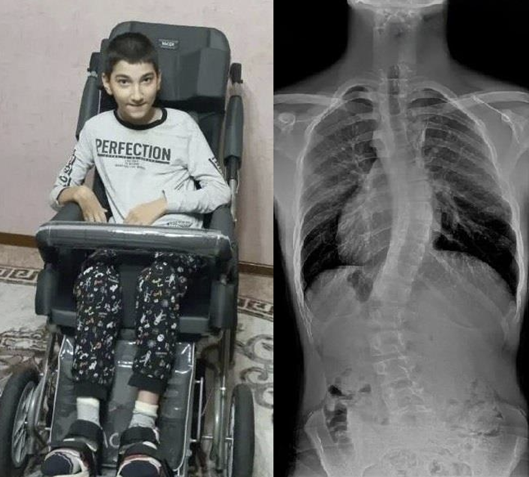

Diagnozy: Skolioza idiopatyczna, przykurcz mięśni, porażenie kończyn dolnych, padaczka, opóźniony rozwój psychoruchowy
Cel zbiórki: 208 000 zł
Krystian ma 16 lat i od najmłodszych lat zmaga się z poważnymi problemami zdrowotnymi. Zdiagnozowano u niego skoliozę oraz opóźniony rozwój psychoruchowy. Każda z tych chorób niesie ze idiopatyczną, przykurcze mięśni, porażenie kończyn dolnych, padaczkę funkcjonowanie wymaga ogromnego wysiłku i stałej opieki. sobą ogromne wyzwania, a ich połączenie sprawia, że codzienne
codziennych czynności. Nawet najprostsze rzeczy, takie jak ubieranie Krystian nie porusza się samodzielnie i potrzebuje pomocy w większości postępująca skolioza oraz przykurcze mięśni powodują ból i ograniczają się czy przemieszczanie, stanowią dla niego trudność. Dodatkowo intensywna rehabilitacja. jego sprawność ruchową, dlatego tak ważna jest systematyczna i
Celem zbiórki jest zgromadzenie środków na intensywną rehabilitację, regularnej terapii Krystian ma szansę na zmniejszenie bólu, poprawę leczenie neurologiczne, turnusy rehabilitacyjne. Właśnie dzięki sprawności i większą samodzielność.
Każdy dzień to dla niego walka o lepsze jutro. Prosimy o wsparcie – razem możemy pomóc Krystianowi zawalczyć o godne i spokojniejsze życie.